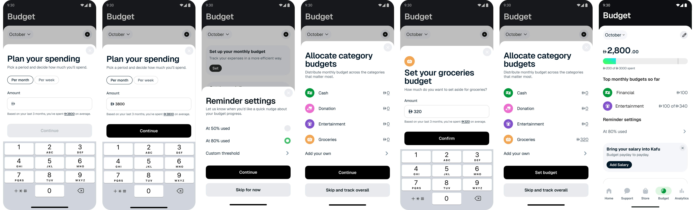

Бюджет в Kafu
Самостоятельный концепт о том, как финтех-приложение могло бы показывать месячный бюджет так, чтобы помогать людям действовать до перерасхода — а не после того, как деньги уже потрачены.
Создано, чтобы помочь людям до перерасхода

С чего всё началось
Молодые наёмные пользователи в ОАЭ незаметно остаются без денег до зарплаты. Кофе по дороге, такси, доставка еды и забытые подписки складываются быстрее, чем кажется.
Мобильные банки хорошо показывают, что уже потрачено. И заметно хуже — сколько ещё осталось, пока есть время на это повлиять.
Приложение банка показывает итоги, но только когда ущерб уже нанесён.
Что я решал
Цель — вынести понятный, постоянно видимый ответ на вопрос «сколько я ещё могу потратить?» на передний план опыта, где он действительно может изменить поведение, не раздражая.
Почему приложение сообщает мне только после перерасхода?
Куда смотреть, чтобы понять, что я ещё в порядке?
Два сигнала покажут, что это работает
- Доля удержавшихся в бюджете — пользователи, завершившие месяц в рамках собственного лимита
- Частота проверки бюджета — насколько часто к экрану обращаются как к источнику, которому доверяют
«Предупреждение на 80% полезно; всё, что раньше — я игнорирую.»
— Повторяющаяся мысль из разговоров с пользователями
Как я подошёл к задаче
Я начал с людей. Собрал цитаты молодых наёмных специалистов, сгруппировал их в аффинити-карту и проследил полный месячный денежный цикл, чтобы точно понять, где теряется осознанность — прежде чем нарисовать хоть один экран.
Путь
-
Исследование и аффинити-карта
Собрал репрезентативные цитаты молодых наёмных специалистов и сгруппировал их в темы.
-
Карта пути пользователя
Составил типичный месячный цикл — от зарплаты до конца месяца — чтобы найти точки трения и моменты вмешательства.
-
Пользовательские истории
Превратил темы и путь в пять пользовательских историй, определивших объём MVP.
-
Конкурентный анализ
Изучил, как N26 и Revolut работают с бюджетом на iOS, чтобы найти нишу, которую стоит занять.
-
Дизайн и флоу
Спроектировал бюджетный флоу от начала до конца — от установки суммы на месяц до отслеживания живого цикла.
-
Арабский / RTL
Прототипировал бюджетные экраны в зеркальном виде, чтобы проверить макет для половины аудитории ОАЭ.
Что выявило исследование
Из аффинити-карты возникли четыре темы — и каждая чётко легла в дизайн-решение.
- Слепые траты — мелкие бесконтактные платежи проходят на автопилоте; решаем видимость категоризацией, а не ручным вводом
- Нет осознанности в реальном времени — показываем состояние бюджета пассивно, чтобы его видели, не разыскивая
- Путаница с категориями — умная авто-категоризация снижает усталость от решений; правки задним числом сохраняют контроль
- Настройки уведомлений — настраиваемые пороги и отложка уважают то, как каждый хочет получать предупреждения
«Аналитика ретроспективна — что я потратил? Бюджет проактивен — сколько я ещё могу потратить? Функция ежедневного использования заслуживает места в таб-баре, а не подстраницы в двух тапах.»
— Ключевой инсайт из конкурентного анализа
Проектирование решения
MVP свёлся к четырём продуктовым решениям, каждое напрямую связано с темой исследования — и к флоу, который проводит пользователя от установки суммы на месяц через настройки напоминаний и распределение по категориям к живому обзору, отслеживающему месяц.
- Постоянный виджет бюджета — «Потрачено / Всего» с прогресс-баром, виден сразу при открытии приложения
- Умная авто-категоризация — предлагает категорию по продавцу и сумме; пользователь подтверждает или меняет
- Настраиваемые пороги уведомлений — 80 / 90 / 100%, любая комбинация, с отложкой
- Запрос месячного бюджета — экран-подсказка установить бюджет, когда приходит зарплата

Создано и для арабского
Половина ОАЭ читает по-арабски, поэтому RTL был не дополнением, а проверкой. Я пересобрал бюджетные экраны в зеркальном виде, чтобы убедиться, что виджет, прогресс-бар и список категорий переживают отражение без потери читаемости.

Что я возьму с собой
- Размещение — это функция — инструменты ежедневного использования заслуживают первоклассного места, а не подстраницы в двух тапах
- Дизайн уведомлений — это вкус, а не наука — выбор для пользователя превращает трение в воспринимаемую функцию
- Локализация рано вскрывает дизайн-долг — RTL — это лакмусовая бумажка, а не дополнение
Оглядываясь назад
То, что начиналось как идея «покажи мне мой бюджет», превратилось в исследование проактивного дизайна — показать нужное число в нужный момент, чтобы люди могли действовать, пока это ещё важно.
Самым сложным был не виджет. А решение о том, что заслуживает быть увиденным без поиска.
Хотите обсудить детали?
С радостью расскажу про исследование, дизайн-решения и то, что не вошло в финал.
Связаться